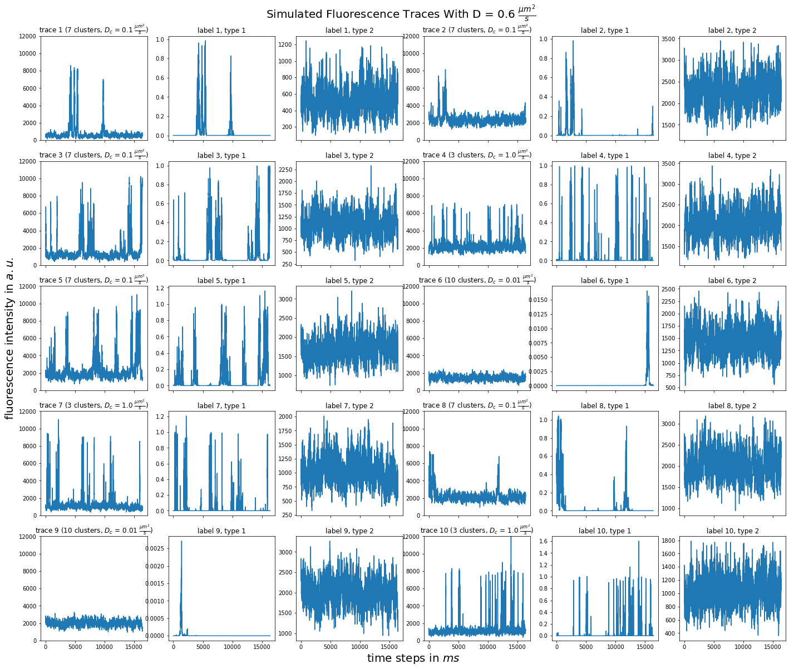
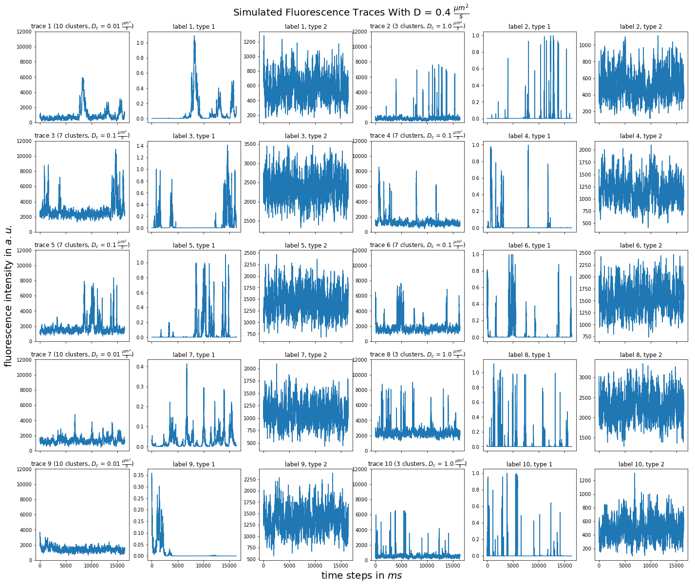
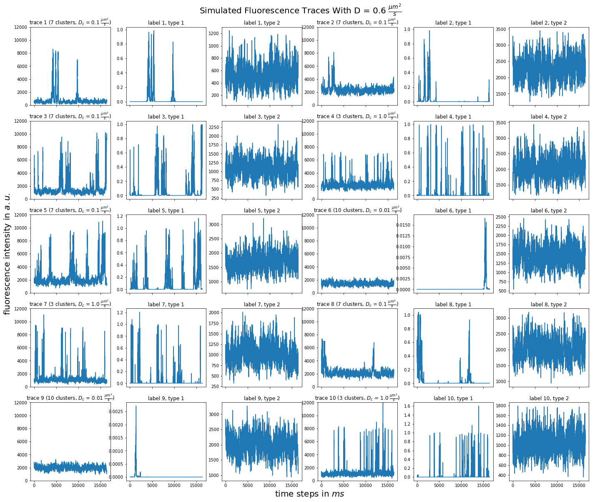
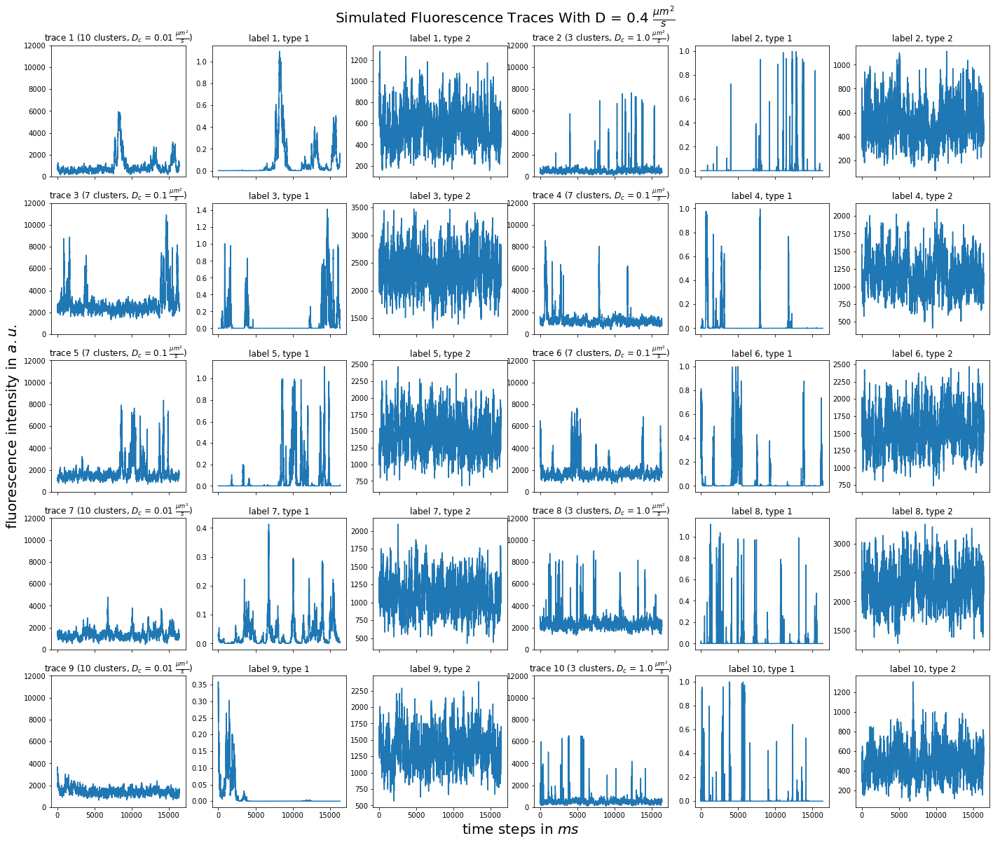
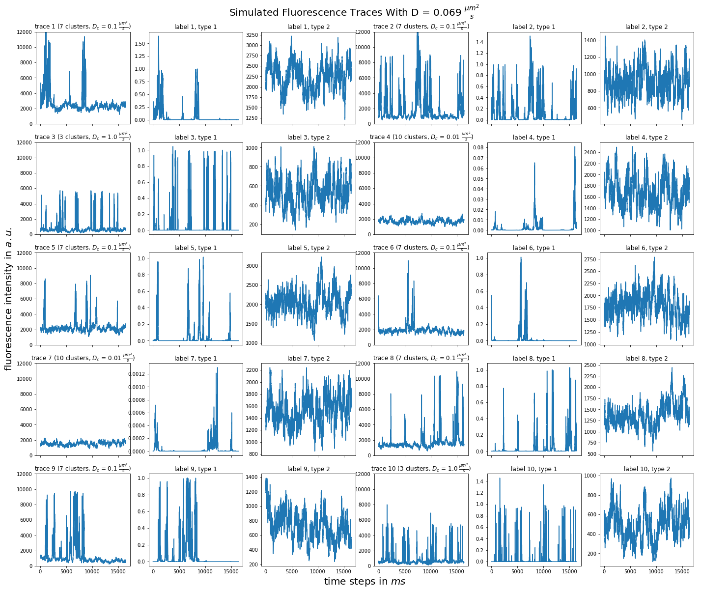
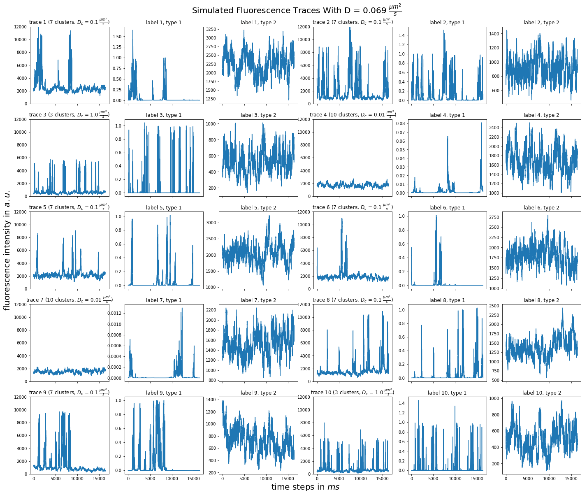

Lab book Fluotracify
1 Technical Notes
1.1 README
1.1.1 General:
- This file corresponds to my lab book for my doctoral thesis tackling artifact correction in Fluorescence Correlation Spectroscopy (FCS) measurements using Deep Neural Networks. It also contains notes taken during the process of setting up this workflow for reproducible research.
- This file contains explanations of how things are organized, of the workflow for doing experiments, changes made to the code, and the observed behavior in the "* Data" section.
- The branching model used is described in this paper. Therefore: if you
are interested in the "* Data" section, you have to
git clonethe data branch of the repository. The main branch is clean from any results, it contains only source code and the analysis. - This project is my take on Open-notebook science. The idea was postulated in
a blog post in 2006:
… there is a URL to a laboratory notebook that is freely available and indexed on common search engines. It does not necessarily have to look like a paper notebook but it is essential that all of the information available to the researchers to make their conclusions is equally available to the rest of the world —Jean-Claude Bradley
- Proposal on how to deal with truly private data (e.g. notes from a confidential meeting with a colleague), which might otherwise be noted in a normal Lab notebook: do not include them here. Only notes relevant to the current project should be taken
1.1.2 Code block languages used in this document
# This is a sh block for shell / bash scripting. In the context of this file, # these blocks are mainly used for operations on my local computer. # In the LabBook.html rendering of this document, these blocks will have a # light green colour (#F0FBE9)
# This block can open and access tmux sessions, used for shell scripting on # remote computing clusters. # In the LabBook.html rendering of this document, these blocks will have a # distinct light green colour (#E1EED8)
# This is a python block. In the context of this file, it is seldomly used # (only for examplary scripts.) # In the LabBook.html rendering of this document, these blocks will have a # light blue colour (#E6EDF4)
# This is a jupyter-python block. The code is sent to a jupyter kernel running # on a remote high performance computing cluster. Most of my jupyter code is # executed this way. # In the LabBook.html rendering of this document, these blocks will have a # light orange colour (#FAEAE1)
;; This is a emacs-lisp block, the language used to customize Emacs, which is ;; sometimes necessary, since the reproducible workflow of this LabBook is ;; tightly integrated with Emacs and org-mode. ;; In the LabBook.html rendering of this document, these blocks will have a ;; light violet colour (#F7ECFB)
This is a literal example block. It can be used very flexibly - in the context of this document the output of most code blocks is displayed this way. In the LabBook.html rendering of this document, these blocks will have a light yellow colour (#FBFBBF)
This is a literal example block enclosed in a details block. This is useful to make the page more readable by collapsing large amounts of output. In the Labbook.html rendering of this document, the details block will have a light grey colour (#f0f0f0) and a pink color when hovering above it.
1.1.3 Experiments workflow:
- Create a new branch from
main - Print out the git log from the latest commit and the metadata
- Call the analysis scripts, follow the principles outlined in Organization of code
- All machine learning runs are saved in
data/mlruns, all other data indata/#experiment-name - Add a
** exp-<date>-<name>" section to this file under Data - Commit/push the results of this separate branch
- Merge this new branch with the remote
databranch
1.1.4 Example for experimental setup procedure
1.1.5 tools used (notes)
1.1.5.1 Emacs magit
gitflow-avh(magit-flow) to follow the flow- possibly https://github.com/magit/magit-annex for large files. Follow this: https://git-annex.branchable.com/walkthrough/
- maybe check out git-toolbelt at some point https://github.com/nvie/git-toolbelt#readme with https://nvie.com/posts/git-power-tools/
1.1.5.2 jupyter
- emacs jupyter for running and connecting to kernel on server: https://github.com/dzop/emacs-jupyter
- if I actually still would use .ipynb files, these might come handy:
- jupytext: https://github.com/mwouts/jupytext
- nbstripout: https://github.com/kynan/nbstripout
1.1.5.3 mlflow
1.1.5.4 tensorflow
1.2 Template for data entry and setup notes:
1.2.1 exp-#date-#title
1.2.1.1 git:
git log -1
1.2.1.2 System Metadata:
import os import pprint ramlist = os.popen('free -th').readlines()[-1].split()[1:] print('No of CPUs in system:', os.cpu_count()) print('No of CPUs the current process can use:', len(os.sched_getaffinity(0))) print('load average:', os.getloadavg()) print('os.uname(): ', os.uname()) print('PID of process:', os.getpid()) print('RAM total: {}, RAM used: {}, RAM free: {}'.format( ramlist[0], ramlist[1], ramlist[2])) !echo the current directory: $PWD !echo My disk usage: !df -h if _long: %conda list pprint.pprint(dict(os.environ), sort_dicts=False)
1.2.1.3 Tmux setup and scripts
rm ~/.tmux-local-socket-remote-machine REMOTE_SOCKET=$(ssh ara 'tmux ls -F "#{socket_path}"' | head -1) echo $REMOTE_SOCKET ssh ara -tfN \ -L ~/.tmux-local-socket-remote-machine:$REMOTE_SOCKET
| rm: | cannot | remove | 'home/lex.tmux-local-socket-remote-machine': | No | such | file | or | directory |
| ye53nis@ara-login01.rz.uni-jena.de's | password: | |||||||
| /tmp/tmux-67339/default | ||||||||
| > | ye53nis@ara-login01.rz.uni-jena.de's | password: |
1.2.1.4 SSH tunneling
Different applications can be run on the remote compute node. If I want to access them at the local machine, and open them with the browser, I use this tunneling script.
ssh -t -t ara -L $port:localhost:$port ssh $node -L $port:Localhost:$port
Apps I use that way:
- Jupyter lab for running Python 3-Kernels
- TensorBoard
- Mlflow ui
1.2.1.5 jupyter scripts
Starting a jupyter instance on a server where the necessary libraries are installed is easy using this script:
conda activate tf export PORT=9999 export XDG_RUNTIME_DIR='' export XDG_RUNTIME_DIR="" jupyter lab --no-browser --port=$PORT
On the compute node of the HPC, the users' environment is managed through
module files using the system Lmod. The export XDG_RUNTIME_DIR statements
are needed because of a jupyter bug which did not let it start. Right now,
ob-tmux does not support a :var header like normal org-babel does. So
the $port variable has to be set here in the template.
Now this port has to be tunnelled on our local computer (See SSH tunneling). While the tmux session above keeps running, no matter if Emacs is running or not, this following ssh tunnel needs to be active locally to connect to the notebook. If you close Emacs, it would need to be reestablished
1.2.2 Setup notes
1.2.2.1 Setting up a tmux connection from using ob-tmux in org-babel
- prerequisite: tmux versions need to be the same locally and on the server.
Let's verify that now.
- the local tmux version:
tmux -V
tmux 3.0a
- the remote tmux version:
ssh ara tmux -V
ye53nis@ara-login01.rz.uni-jena.de's password: tmux 3.0a
- the local tmux version:
- as is described in the ob-tmux readme, the following code snippet creates
a socket on the remote machine and forwards this socket to the local
machine (note that
socket_pathwas introduced in tmux version 2.2)REMOTE_SOCKET=$(ssh ara 'tmux ls -F "#{socket_path}"' | head -1) echo $REMOTE_SOCKET ssh ara -tfN \ -L ~/.tmux-local-socket-remote-machine:$REMOTE_SOCKET
ye53nis@ara-login01.rz.uni-jena.de's password: /tmp/tmux-67339/default > ye53nis@ara-login01.rz.uni-jena.de's password: - now a new tmux session with name
ob-NAMEis created when using a code block which looks like this:#+BEGIN_SRC tmux :socket ~/.tmux-local-socket-remote-machine :session NAME - Commands can be sent now to the remote tmux session, BUT note that the output is not printed yet
- there is a workaround for getting output back to our LabBook.org: A script
which allows to print the output from the tmux session in an
#+begin_example-Block below the tmux block by pressingC-c C-oorC-c C-v C-owhen the pointer is inside the tmux block.
1.2.2.2 emacs-jupyter Setup
Emacs-jupyter aims to be an API for a lot of functionalities of the
jupyter project. The documentation can be found on GitHub.
- For the whole document: connect to a running jupyter instance
M-x jupyter-server-list-kernels- set server URL, e.g.
http://localhost:8889 - set websocket URL, e.g.
http://localhost:8889
- set server URL, e.g.
- two possibilities
- kernel already exists \(\to\) list of kernels and
kernel-IDis displayed - kernel does not exist \(\to\) prompt asks if you want to start one \(\to\)
yes \(\to\) type kernel you want to start, e.g.
Python 3
- kernel already exists \(\to\) list of kernels and
- In the subtree where you want to use
jupyter-pythonblocks withorg babel- set the
:header-args:jupyter-python :session /jpy:localhost#kernel:8889-ID - customize the output folder using the following org-mode variable:
(setq org-babel-jupyter-resource-directory "./data/exp-test/plots")
./data/exp-test/plots
- set the
- For each individual block, the following customizations might be useful
- jupyter kernels can return multiple kinds of rich output (images,
html, …) or scalar data (plain text, numbers, lists, …). To force
a plain output, use
:results scalar. To show the output in the minibuffer only, use:results silent - to change the priority of different rich outputs, use
:displayheader argument, e.g.:display text/plain text/htmlprioritizes plain text over html. All supported mimetypes in default order:- text/org
- image/svg+xml, image/jpeg, image/png
- text/html
- text/markdown
- text/latex
- text/plain
- We can set jupyter to output pandas DataFrames as org tables
automatically using the source block header argument
:pandoc t - useful keybindings
M-ito open the documentation for wherever your pointer is (like pressingShift-TABin Jupyter notebooks)C-c C-ito interrupt the kernel,C-c C-rto restart the kernel
- jupyter kernels can return multiple kinds of rich output (images,
html, …) or scalar data (plain text, numbers, lists, …). To force
a plain output, use
1.2.3 Notes on archiving
1.2.3.1 Exporting the LabBook.org to html in a twbs style
- I am partial to the twitter bootstrap theme of html, since I like it's simple design, but clear structure with a nice table of contents at the side → the following org mode extension supports a seemless export to twitter bootstrap html: https://github.com/marsmining/ox-twbs
- when installed, the export can be triggered via the command
(org-twbs-export-as-html)or via the keyboard shortcut for exportC-c C-efollowed bywfor Twitter bootstrap andhfor saving the .html - Things to configure:
- in general, there are multiple export options: https://orgmode.org/manual/Export-Settings.html
- E.g. I set 2
#+OPTIONSkeywords at the begin of the file:toc:4andH:4which make sure that in my export my sidebar table of contents will show numbered headings till a depth of 4. - I configured my code blocks so that they will not be evaluated when
exporting (I would recommend this especially if you only export for
archiving) and that both the code block and the output will be exported
with the keyword:
#+PROPERTY: header-args :eval never-export :exports both - To discriminate between code blocks for different languages I gave each
of them a distinct colour using
#+HTML_HEAD_EXTRA: <style...(see above) - I had to configure a style for
table, so that thedisplay: block; overflow-x: auto;gets the table to be restricted to the width of the text and if it is larger, activates scrollingwhite-space: nowrap;makes it that there is no wrap in a column, so it might be broader, but better readable if you have scrolling anyway
- Things to do before exporting / Troubleshooting while exporting:
- when using a dark theme for you emacs, the export of the code blocks
might show some ugly dark backgrounds from the theme. If this becomes
an issue, change to a light theme for the export with
M-x (load-theme)and choosesolarized-light - only in the
databranch you set the git tags after merging. If you want to show them here, execute the corresponding function in Git TAGs - make sure your file links work properly! I recommend referencing your files relatively (e.g. [ [ f ile:./data/exp-XXXXXX-test/test.png]] without spaces). Otherwise there will be errors in your Messages buffer
- There might be errors with your code blocks
- e.g. the export function expects you to assign a default variable to your functions
- if you call a function via the
#+CALLmechanism, it wants you to include two parentheses for the function, e.g.#+CALL: test()
- check indentation of code blocks inside lists
- add a
detailsblock around large output cells. This makes them expandable. I added some#+HTML_HEAD_EXTRA: <style...inspired by alhassy. That's how thedetailsblock looks like:#+begin_details #+end_details
- If you reference a parameter with an underscore in the name, use the
org markdown tricks to style them like code (
==or~~), otherwise the part after the underscore will be rendered like a subscript:under_scorevs underscore
- when using a dark theme for you emacs, the export of the code blocks
might show some ugly dark backgrounds from the theme. If this becomes
an issue, change to a light theme for the export with
- Things to do after exporting:
- In my workflow, the exported
LabBook.htmlwith the overview of all experiments is in thedatafolder. If you move the file, you will have to fix the file links for the new location, e.g. via "Find and replace"M-%:- if you move the org file → in the org file find
[[file:./data/and replace with[[file:./→ then export withC-c C-e w h - if you export first with
C-c C-e w hand move the html file todata→ in the html file find./dataand replace with.
- if you move the org file → in the org file find
- In my workflow, the exported
1.3 Organization of git
1.3.1 remote/origin/main branch:
- contains all the source code in folder src/ which is used for experiments.
- contains the LabBook.org template
- contains setup- and metadata files such as MLproject or conda.yaml
- the log contains only lasting alterations on the folders and files mentioned above, which are e.g. used for conducting experiments or which introduce new features. Day-to-day changes in code
1.3.2 remote/origin/exp### branches:
- if an experiment is done, the code and templates will be branched out from main in an #experiment-name branch, ### meaning some meaningful descriptor.
- all data generated during the experiment (e.g. .csv files, plots, images, etc), is stored in a folder with the name data/#experiment-name, except machine learning-specific data and metadata from `mlflow` runs, which are saved under data/mlruns (this allows easily comparing machine learning runs with different experimental settings)
- The LabBook.org file is essential
- If possible, all code is executed from inside this file (meaning analysis scripts or calling the code from the scr/ directory).
- All other steps taken during an experiment are noted down, as well as conclusions or my thought process while conducting the experiment
- Provenance data, such as metadata about the environment the code was executed in, the command line output of the code, and some plots
1.3.3 remote/origin/develop branch:
- this is the branch I use for day to day work on features and exploration. All of my current activity can be followed here.
1.3.4 remote/origin/data branch:
- contains a full cronicle of the whole research process
- all #experiment-name branches are merged here. Afterwards the original branch is deleted and on the data branch there is a Git tag which shows the merge commit to make accessing single experiments easy.
- the develop branch is merged here as well.
1.3.5 Git TAGs
1.3.5.1 Stable versions:
1.3.5.2 All tags from git:
git push origin --tags git tag -n1
exp-200402-test Merge branch 'exp-200402-test' into data exp-200520-unet Merge branch 'exp-310520-unet' into data exp-200531-unet Merge branch 'heads/exp-310520-unet' into data exp-201231-clustsim exp-201231-clustsim exp-210204-unet Add exp-210204-unet LabBook part 3 exp-310520-unet move exp-310520-unet to data branch manually
1.4 Organization of code
1.4.1 scripts:
1.4.2 src/
1.4.2.1 fluotracify/
- imports/
- simulations/
- training/
- applications/
- doc/
- use Sphinx
- follow this: https://daler.github.io/sphinxdoc-test/includeme.html
- evtl export org-mode Readme to rst via https://github.com/msnoigrs/ox-rst
- possibly heavily use http://www.sphinx-doc.org/en/master/usage/extensions/autodoc.html
- for examples sphinx-galleries could be useful https://sphinx-gallery.github.io/stable/getting_started.html
- use Sphinx
1.4.2.2 nanosimpy/
- cloned from dwaithe with refactoring for Python 3-compatibility
1.5 Changes in this repository (without "* Data" in this file)
1.5.1 Changes in LabBook.org (without "* Data")
1.5.1.1 2022-02-19
- Add
#+HTML_HEAD_EXTRA: <style...fortableto enable scrolling if the table overflows
1.5.1.2 2021-12-16
- Add
detailsblocks, corresponding#+HTML_HEAD_EXTRA: <style...and documentation in Notes on archiving
1.5.1.3 2021-08-05
- Rename
masterbranch tomainbranch
1.5.1.4 2021-04-04
- Add
#+OPTIONS: H:4and#+OPTIONS: toc:4to show up to 4 levels of depth in the html (twbs) export of this LabBook in the table of contents at the side - I added Notes on archiving
1.5.1.5 2020-11-04
- update "jupyter scripts" in Template for data entry and setup notes:
for new conda environment on server (now
conda activate tf-nightly)
1.5.1.6 2020-05-31
- extend general documentation in README
- Add code block examples
- extend documentation on experiment workflow
- move setup notes from README to "Template for data entry and setup notes"
- remove emacs-lisp code for custom tmux block functions (not relevant enough)
- change named "jpt-tmux" from starting a jupyter notebook to starting
jupyter lab. Load a conda environment instead of using Lmod's
module load
1.5.1.7 2020-05-07
- extend documentation on git model
- extend documentation on jupyter setup
1.5.1.8 2020-04-22
- added parts of README which describe the experimental process
- added templates for system metadata, tmux, jupyter setup
- added organization of code
1.5.1.9 2020-03-30
- set up lab book and form git repo accoring to setup by Luka Stanisic et al
1.5.2 Changes in src/fluotracify
2 Data
2.1 exp-201231-clustersim
- this experiment is to document the simulation of fluorescence timetraces with "bright cluster" artifacts
2.1.1 connect to jupyter notebook
- Request compute node via tmux
cd / srun -p s_standard --time=7-10:00:00 --ntasks-per-node=24 --mem-per-cpu=2000 --pty bash
(tf-nightly) [ye53nis@node146 /]$ jupyter lab --no-browser --port=$PORT
[I 00:02:39.372 LabApp] JupyterLab extension loaded from /home/ye53nis/.conda/envs/tf-nightly/lib/python3.8/site-packages/jupyterlab
[I 00:02:39.372 LabApp] JupyterLab application directory is /home/ye53nis/.conda/envs/tf-nightly/share/jupyter/lab
[I 00:02:39.375 LabApp] Serving notebooks from local directory: /
[I 00:02:39.375 LabApp] Jupyter Notebook 6.1.4 is running at:
[I 00:02:39.375 LabApp] http://localhost:9999/?token=93791464f12bacd92a8343c1a3be84117c0674d5703fd278
[I 00:02:39.375 LabApp] or http://127.0.0.1:9999/?token=93791464f12bacd92a8343c1a3be84117c0674d5703fd278
[I 00:02:39.375 LabApp] Use Control-C to stop this server and shut down all kernels (twice to skip confirmation).
[C 00:02:39.380 LabApp]
To access the notebook, open this file in a browser:
file:///home/ye53nis/.local/share/jupyter/runtime/nbserver-54410-open.html
Or copy and paste one of these URLs:
http://localhost:9999/?token=93791464f12bacd92a8343c1a3be84117c0674d5703fd278
or http://127.0.0.1:9999/?token=93791464f12bacd92a8343c1a3be84117c0674d5703fd278
- Create SSH tunnel
| sh-5.0$ | sh-5.0$ | ye53nis@ara-login01.rz.uni-jena.de's | password: | |||||
| ye53nis@node146's | password: | |||||||
| Last | login: | Mon | Jan | 4 | 12:09:39 | 2021 | from | login01.ara |
- connect to Python 3 kernel using
jupyter-server-list-kernelspython3 f6f8ea4a-c473-459c-93b6-4984b0987ff8 a few seconds ago starting 0
2.1.2 record metadata
%cd /beegfs/ye53nis/drmed-git/
/beegfs/ye53nis/drmed-git
!git log -1 !git status
commit 90315560e472cfec38b0f927e905da1635d25240
Author: Apoplex <oligolex@vivaldi.net>
Date: Thu Dec 31 01:32:25 2020 +0100
change metadata gathering and add docs
# On branch exp-201231-clustersim
# Changes not staged for commit:
# (use "git add <file>..." to update what will be committed)
# (use "git checkout -- <file>..." to discard changes in working directory)
# (commit or discard the untracked or modified content in submodules)
#
# modified: src/nanosimpy (untracked content)
#
# Untracked files:
# (use "git add <file>..." to include in what will be committed)
#
# data/
# experiment_params.csv
# mlruns/
# tramp.YDPCnB
no changes added to commit (use "git add" and/or "git commit -a")
#+CALL: jp-metadata(_long='True)
No of CPUs in system: 72
No of CPUs the current process can use: 24
load average: (16.0, 16.04, 16.01)
os.uname(): posix.uname_result(sysname='Linux', nodename='node146', release='3.10.0-957.1.3.el7.x86_64', version='#1 SMP Thu Nov 29 14:49:43 UTC 2018', machine='x86_64')
PID of process: 173820
RAM total: 199G, RAM used: 70G, RAM free: 99G
the current directory: /beegfs/ye53nis/drmed-git
My disk usage:
Filesystem Size Used Avail Use% Mounted on
/dev/sda1 50G 3.2G 47G 7% /
devtmpfs 94G 0 94G 0% /dev
tmpfs 94G 297M 94G 1% /dev/shm
tmpfs 94G 195M 94G 1% /run
tmpfs 94G 0 94G 0% /sys/fs/cgroup
nfs01-ib:/cluster 2.0T 473G 1.6T 24% /cluster
nfs03-ib:/pool/work 100T 70T 31T 70% /nfsdata
nfs02-ib:/data01 88T 71T 17T 81% /data01
nfs01-ib:/home 80T 71T 9.8T 88% /home
/dev/sda3 6.0G 435M 5.6G 8% /var
/dev/sda5 2.0G 34M 2.0G 2% /tmp
/dev/sda6 169G 18G 152G 11% /local
beegfs_nodev 524T 437T 88T 84% /beegfs
tmpfs 19G 0 19G 0% /run/user/67339
# packages in environment at /home/ye53nis/.conda/envs/tf-nightly:
#
# Name Version Build Channel
_libgcc_mutex 0.1 main
absl-py 0.11.0 pypi_0 pypi
alembic 1.4.1 py_0 conda-forge
appdirs 1.4.4 pyh9f0ad1d_0 conda-forge
argon2-cffi 20.1.0 py38h7b6447c_1
asn1crypto 1.4.0 pyh9f0ad1d_0 conda-forge
asteval 0.9.16 pyh5ca1d4c_0 conda-forge
astunparse 1.6.3 pypi_0 pypi
async_generator 1.10 py_0
attrs 20.2.0 py_0
azure-core 1.8.2 pyh9f0ad1d_0 conda-forge
azure-storage-blob 12.5.0 pyh9f0ad1d_0 conda-forge
backcall 0.2.0 py_0
blas 1.0 mkl
bleach 3.2.1 py_0
blinker 1.4 py_1 conda-forge
brotlipy 0.7.0 py38h7b6447c_1000
ca-certificates 2020.12.5 ha878542_0 conda-forge
cachetools 4.1.1 pypi_0 pypi
certifi 2020.12.5 py38h578d9bd_0 conda-forge
cffi 1.14.3 py38he30daa8_0
chardet 3.0.4 py38_1003
click 7.1.2 pyh9f0ad1d_0 conda-forge
cloudpickle 1.6.0 py_0 conda-forge
configparser 5.0.1 py_0 conda-forge
cryptography 3.1.1 py38h1ba5d50_0
cycler 0.10.0 py38_0
databricks-cli 0.9.1 py_0 conda-forge
dbus 1.13.18 hb2f20db_0
decorator 4.4.2 py_0
defusedxml 0.6.0 py_0
docker-py 4.3.1 py38h32f6830_1 conda-forge
docker-pycreds 0.4.0 py_0 conda-forge
entrypoints 0.3 py38_0
expat 2.2.10 he6710b0_2
fcsfiles 2020.9.18 pypi_0 pypi
flask 1.1.2 pyh9f0ad1d_0 conda-forge
flatbuffers 1.12 pypi_0 pypi
fontconfig 2.13.0 h9420a91_0
freetype 2.10.4 h5ab3b9f_0
future 0.18.2 py38h578d9bd_2 conda-forge
gast 0.3.3 pypi_0 pypi
gitdb 4.0.5 py_0 conda-forge
gitpython 3.1.11 py_0 conda-forge
glib 2.66.1 h92f7085_0
google-auth 1.23.0 pypi_0 pypi
google-auth-oauthlib 0.4.2 pypi_0 pypi
google-pasta 0.2.0 pypi_0 pypi
gorilla 0.3.0 py_0 conda-forge
grpcio 1.32.0 pypi_0 pypi
gst-plugins-base 1.14.0 hbbd80ab_1
gstreamer 1.14.0 hb31296c_0
gunicorn 20.0.4 py38h32f6830_2 conda-forge
h5py 2.10.0 pypi_0 pypi
icu 58.2 he6710b0_3
idna 2.10 py_0
importlib-metadata 2.0.0 py_1
importlib_metadata 2.0.0 1
intel-openmp 2020.2 254
ipykernel 5.3.4 py38h5ca1d4c_0
ipython 7.18.1 py38h5ca1d4c_0
ipython_genutils 0.2.0 py38_0
isodate 0.6.0 py_1 conda-forge
itsdangerous 1.1.0 py_0 conda-forge
jedi 0.17.2 py38_0
jinja2 2.11.2 py_0
jpeg 9b h024ee3a_2
json5 0.9.5 py_0
jsonschema 3.2.0 py_2
jupyter_client 6.1.7 py_0
jupyter_core 4.6.3 py38_0
jupyterlab 2.2.6 py_0
jupyterlab_pygments 0.1.2 py_0
jupyterlab_server 1.2.0 py_0
keras-preprocessing 1.1.2 pypi_0 pypi
kiwisolver 1.3.0 py38h2531618_0
lcms2 2.11 h396b838_0
ld_impl_linux-64 2.33.1 h53a641e_7
libedit 3.1.20191231 h14c3975_1
libffi 3.3 he6710b0_2
libgcc-ng 9.1.0 hdf63c60_0
libgfortran-ng 7.3.0 hdf63c60_0
libpng 1.6.37 hbc83047_0
libprotobuf 3.13.0.1 h8b12597_0 conda-forge
libsodium 1.0.18 h7b6447c_0
libstdcxx-ng 9.1.0 hdf63c60_0
libtiff 4.1.0 h2733197_1
libuuid 1.0.3 h1bed415_2
libxcb 1.14 h7b6447c_0
libxml2 2.9.10 hb55368b_3
lmfit 1.0.1 py_1 conda-forge
lz4-c 1.9.2 heb0550a_3
mako 1.1.3 pyh9f0ad1d_0 conda-forge
markdown 3.3.3 pypi_0 pypi
markupsafe 1.1.1 py38h7b6447c_0
matplotlib 3.3.2 0
matplotlib-base 3.3.2 py38h817c723_0
mistune 0.8.4 py38h7b6447c_1000
mkl 2020.2 256
mkl-service 2.3.0 py38he904b0f_0
mkl_fft 1.2.0 py38h23d657b_0
mkl_random 1.1.1 py38h0573a6f_0
mlflow 1.11.0 py38h32f6830_1 conda-forge
msrest 0.6.19 pyh9f0ad1d_0 conda-forge
multipletau 0.3.3 pypi_0 pypi
nbclient 0.5.1 py_0
nbconvert 6.0.7 py38_0
nbformat 5.0.8 py_0
ncurses 6.2 he6710b0_1
nest-asyncio 1.4.1 py_0
notebook 6.1.4 py38_0
numpy 1.19.2 py38h54aff64_0
numpy-base 1.19.2 py38hfa32c7d_0
oauthlib 3.0.1 py_0 conda-forge
olefile 0.46 py_0
openssl 1.1.1h h516909a_0 conda-forge
opt-einsum 3.3.0 pypi_0 pypi
packaging 20.4 py_0
pandas 1.1.3 py38he6710b0_0
pandoc 2.11 hb0f4dca_0
pandocfilters 1.4.2 py38_1
parso 0.7.0 py_0
pcre 8.44 he6710b0_0
pexpect 4.8.0 py38_0
pickleshare 0.7.5 py38_1000
pillow 8.0.1 py38he98fc37_0
pip 20.2.4 py38_0
prometheus_client 0.8.0 py_0
prometheus_flask_exporter 0.18.1 pyh9f0ad1d_0 conda-forge
prompt-toolkit 3.0.8 py_0
protobuf 3.13.0.1 py38h950e882_1 conda-forge
ptyprocess 0.6.0 py38_0
pyasn1 0.4.8 pypi_0 pypi
pyasn1-modules 0.2.8 pypi_0 pypi
pycparser 2.20 py_2
pygments 2.7.2 pyhd3eb1b0_0
pyjwt 1.7.1 py_0 conda-forge
pyopenssl 19.1.0 py_1
pyparsing 2.4.7 py_0
pyqt 5.9.2 py38h05f1152_4
pyrsistent 0.17.3 py38h7b6447c_0
pysocks 1.7.1 py38_0
python 3.8.5 h7579374_1
python-dateutil 2.8.1 py_0
python-editor 1.0.4 py_0 conda-forge
python_abi 3.8 1_cp38 conda-forge
pytz 2020.1 py_0
pyyaml 5.3.1 py38h8df0ef7_1 conda-forge
pyzmq 19.0.2 py38he6710b0_1
qt 5.9.7 h5867ecd_1
querystring_parser 1.2.4 py_0 conda-forge
readline 8.0 h7b6447c_0
requests 2.24.0 py_0
requests-oauthlib 1.3.0 pyh9f0ad1d_0 conda-forge
rsa 4.6 pypi_0 pypi
scipy 1.5.2 py38h0b6359f_0
seaborn 0.11.0 py_0
send2trash 1.5.0 py38_0
setuptools 50.3.0 py38hb0f4dca_1
sip 4.19.13 py38he6710b0_0
six 1.15.0 py_0
smmap 3.0.4 pyh9f0ad1d_0 conda-forge
sqlalchemy 1.3.13 py38h516909a_0 conda-forge
sqlite 3.33.0 h62c20be_0
sqlparse 0.4.1 pyh9f0ad1d_0 conda-forge
tabulate 0.8.7 pyh9f0ad1d_0 conda-forge
tb-nightly 2.4.0a20201102 pypi_0 pypi
tensorboard-plugin-wit 1.7.0 pypi_0 pypi
termcolor 1.1.0 pypi_0 pypi
terminado 0.9.1 py38_0
testpath 0.4.4 py_0
tf-estimator-nightly 2.4.0.dev2020102301 pypi_0 pypi
tf-nightly 2.5.0.dev20201029 pypi_0 pypi
tifffile 2020.10.1 py38hdd07704_2
tk 8.6.10 hbc83047_0
tornado 6.0.4 py38h7b6447c_1
traitlets 5.0.5 py_0
typing-extensions 3.7.4.3 pypi_0 pypi
uncertainties 3.1.5 pyhd8ed1ab_0 conda-forge
urllib3 1.25.11 py_0
wcwidth 0.2.5 py_0
webencodings 0.5.1 py38_1
websocket-client 0.57.0 py38h32f6830_3 conda-forge
werkzeug 1.0.1 pyh9f0ad1d_0 conda-forge
wheel 0.35.1 py_0
wrapt 1.12.1 pypi_0 pypi
xz 5.2.5 h7b6447c_0
yaml 0.2.5 h516909a_0 conda-forge
zeromq 4.3.3 he6710b0_3
zipp 3.4.0 pyhd3eb1b0_0
zlib 1.2.11 h7b6447c_3
zstd 1.4.5 h9ceee32_0
Note: you may need to restart the kernel to use updated packages.
{'SLURM_CHECKPOINT_IMAGE_DIR': '/var/slurm/checkpoint',
'SLURM_NODELIST': 'node146',
'SLURM_JOB_NAME': 'bash',
'XDG_SESSION_ID': '9639',
'SLURMD_NODENAME': 'node146',
'SLURM_TOPOLOGY_ADDR': 'node146',
'SLURM_NTASKS_PER_NODE': '24',
'HOSTNAME': 'login01',
'SLURM_PRIO_PROCESS': '0',
'SLURM_SRUN_COMM_PORT': '43120',
'SHELL': '/bin/bash',
'TERM': 'xterm-color',
'SLURM_JOB_QOS': 'qstand',
'SLURM_PTY_WIN_ROW': '24',
'HISTSIZE': '1000',
'TMPDIR': '/tmp',
'SLURM_TOPOLOGY_ADDR_PATTERN': 'node',
'SSH_CLIENT': '10.231.210.198 43508 22',
'CONDA_SHLVL': '2',
'CONDA_PROMPT_MODIFIER': '(tf-nightly) ',
'WINDOWID': '0',
'QTDIR': '/usr/lib64/qt-3.3',
'QTINC': '/usr/lib64/qt-3.3/include',
'SSH_TTY': '/dev/pts/5',
'QT_GRAPHICSSYSTEM_CHECKED': '1',
'SLURM_NNODES': '1',
'USER': 'ye53nis',
'http_proxy': 'http://internet4nzm.rz.uni-jena.de:3128',
'LS_COLORS': 'rs=0:di=01;34:ln=01;36:mh=00:pi=40;33:so=01;35:do=01;35:bd=40;33;01:cd=40;33;01:or=40;31;01:mi=01;05;37;41:su=37;41:sg=30;43:ca=30;41:tw=30;42:ow=34;42:st=37;44:ex=01;32:*.tar=01;31:*.tgz=01;31:*.arc=01;31:*.arj=01;31:*.taz=01;31:*.lha=01;31:*.lz4=01;31:*.lzh=01;31:*.lzma=01;31:*.tlz=01;31:*.txz=01;31:*.tzo=01;31:*.t7z=01;31:*.zip=01;31:*.z=01;31:*.Z=01;31:*.dz=01;31:*.gz=01;31:*.lrz=01;31:*.lz=01;31:*.lzo=01;31:*.xz=01;31:*.bz2=01;31:*.bz=01;31:*.tbz=01;31:*.tbz2=01;31:*.tz=01;31:*.deb=01;31:*.rpm=01;31:*.jar=01;31:*.war=01;31:*.ear=01;31:*.sar=01;31:*.rar=01;31:*.alz=01;31:*.ace=01;31:*.zoo=01;31:*.cpio=01;31:*.7z=01;31:*.rz=01;31:*.cab=01;31:*.jpg=01;35:*.jpeg=01;35:*.gif=01;35:*.bmp=01;35:*.pbm=01;35:*.pgm=01;35:*.ppm=01;35:*.tga=01;35:*.xbm=01;35:*.xpm=01;35:*.tif=01;35:*.tiff=01;35:*.png=01;35:*.svg=01;35:*.svgz=01;35:*.mng=01;35:*.pcx=01;35:*.mov=01;35:*.mpg=01;35:*.mpeg=01;35:*.m2v=01;35:*.mkv=01;35:*.webm=01;35:*.ogm=01;35:*.mp4=01;35:*.m4v=01;35:*.mp4v=01;35:*.vob=01;35:*.qt=01;35:*.nuv=01;35:*.wmv=01;35:*.asf=01;35:*.rm=01;35:*.rmvb=01;35:*.flc=01;35:*.avi=01;35:*.fli=01;35:*.flv=01;35:*.gl=01;35:*.dl=01;35:*.xcf=01;35:*.xwd=01;35:*.yuv=01;35:*.cgm=01;35:*.emf=01;35:*.axv=01;35:*.anx=01;35:*.ogv=01;35:*.ogx=01;35:*.aac=01;36:*.au=01;36:*.flac=01;36:*.mid=01;36:*.midi=01;36:*.mka=01;36:*.mp3=01;36:*.mpc=01;36:*.ogg=01;36:*.ra=01;36:*.wav=01;36:*.axa=01;36:*.oga=01;36:*.spx=01;36:*.xspf=01;36:',
'CONDA_EXE': '/cluster/miniconda3/bin/conda',
'SLURM_STEP_NUM_NODES': '1',
'SLURM_JOBID': '534856',
'SRUN_DEBUG': '3',
'SLURM_NTASKS': '24',
'SLURM_LAUNCH_NODE_IPADDR': '192.168.192.5',
'SLURM_STEP_ID': '0',
'TMUX': '/tmp/tmux-67339/default,27827,6',
'_CE_CONDA': '',
'CONDA_PREFIX_1': '/cluster/miniconda3',
'SLURM_STEP_LAUNCHER_PORT': '43120',
'SLURM_TASKS_PER_NODE': '24',
'MAIL': '/var/spool/mail/ye53nis',
'PATH': '/home/ye53nis/.conda/envs/tf-nightly/bin:/home/lex/Programme/miniconda3/envs/tf-nightly-lab/bin:/home/lex/Programme/miniconda3/condabin:/home/lex/.local/bin:/bin:/usr/bin:/usr/local/bin:/usr/local/sbin:/usr/lib/jvm/default/bin:/usr/bin/site_perl:/usr/bin/vendor_perl:/usr/bin/core_perl:/var/lib/snapd/snap/bin:/home/lex/Programme/miniconda3/bin:/usr/sbin:/home/ye53nis/.local/bin:/home/ye53nis/bin',
'SLURM_WORKING_CLUSTER': 'hpc:192.168.192.1:6817:8448',
'SLURM_JOB_ID': '534856',
'CONDA_PREFIX': '/home/ye53nis/.conda/envs/tf-nightly',
'SLURM_JOB_USER': 'ye53nis',
'SLURM_STEPID': '0',
'PWD': '/',
'SLURM_SRUN_COMM_HOST': '192.168.192.5',
'LANG': 'en_US.UTF-8',
'SLURM_PTY_WIN_COL': '80',
'SLURM_UMASK': '0022',
'MODULEPATH': '/usr/share/Modules/modulefiles:/etc/modulefiles:/cluster/modulefiles',
'SLURM_JOB_UID': '67339',
'LOADEDMODULES': '',
'SLURM_NODEID': '0',
'TMUX_PANE': '%6',
'SLURM_SUBMIT_DIR': '/',
'SLURM_TASK_PID': '53476',
'SLURM_NPROCS': '24',
'SLURM_CPUS_ON_NODE': '24',
'SLURM_DISTRIBUTION': 'block',
'https_proxy': 'http://internet4nzm.rz.uni-jena.de:3128',
'SLURM_PROCID': '0',
'HISTCONTROL': 'ignoredups',
'_CE_M': '',
'SLURM_JOB_NODELIST': 'node146',
'SLURM_PTY_PORT': '46638',
'HOME': '/home/ye53nis',
'SHLVL': '3',
'SLURM_LOCALID': '0',
'SLURM_JOB_GID': '13280',
'SLURM_JOB_CPUS_PER_NODE': '24',
'SLURM_CLUSTER_NAME': 'hpc',
'SLURM_GTIDS': '0,1,2,3,4,5,6,7,8,9,10,11,12,13,14,15,16,17,18,19,20,21,22,23',
'SLURM_SUBMIT_HOST': 'login01',
'SLURM_JOB_PARTITION': 's_standard',
'MATHEMATICA_HOME': '/cluster/apps/mathematica/11.3',
'CONDA_PYTHON_EXE': '/cluster/miniconda3/bin/python',
'LOGNAME': 'ye53nis',
'SLURM_STEP_NUM_TASKS': '24',
'QTLIB': '/usr/lib64/qt-3.3/lib',
'SLURM_JOB_ACCOUNT': 'iaob',
'SLURM_JOB_NUM_NODES': '1',
'MODULESHOME': '/usr/share/Modules',
'CONDA_DEFAULT_ENV': 'tf-nightly',
'LESSOPEN': '||/usr/bin/lesspipe.sh %s',
'SLURM_STEP_TASKS_PER_NODE': '24',
'PORT': '9999',
'SLURM_STEP_NODELIST': 'node146',
'DISPLAY': ':0',
'XDG_RUNTIME_DIR': '',
'XAUTHORITY': '/home/lex/.Xauthority',
'BASH_FUNC_module()': '() { eval `/usr/bin/modulecmd bash $*`\n}',
'_': '/home/ye53nis/.conda/envs/tf-nightly/bin/jupyter',
'JPY_PARENT_PID': '54410',
'CLICOLOR': '1',
'PAGER': 'cat',
'GIT_PAGER': 'cat',
'MPLBACKEND': 'module://ipykernel.pylab.backend_inline'}
2.1.3 set variables
- any files generated using the
:fileheader of org-mode source blocks will be saved here (Note: the destination of the simulations is different, see the variables below)
(setq org-babel-jupyter-resource-directory "./data/exp-201231-clustsim")
./data/exp-201231-clustsim
import sys sys.path.append('/beegfs/ye53nis/drmed-git/src/') from fluotracify.simulations import simulate_trace_with_artifact as stwa
folder = '/beegfs/ye53nis/saves/firstartifact_Nov2020/' file_name = 'traces_brightclust_Nov2020' total_sim_time = 16384 d_mol_arr = [0.069, 0.08, 0.1, 0.2, 0.4, 0.6, 1.0, 3.0, 10, 50] col_per_example = 3 label_for = 'both' number_of_sets = 10 traces_per_set = 100 artifact = 1
- for each diffusion constant given in
d_mol_arr, 10 .csv files will be generated (number_of_sets) which each comprise of 100 fluorescence traces (traces_per_set) - The output of the function will be written to stdout (the terminal inside a tmux session on the machine where the notebook is running). Thus, Emacs can be closed. After the simulations are done, the printed output can be copied from the terminal, because tmux is making it possible to attach and detach to a running terminal session.
sys.stdout = open('/dev/stdout', 'w')
2.1.4 Do the simulation
stwa.produce_training_data(folder=folder, file_name=file_name, col_per_example=col_per_example, number_of_sets=number_of_sets, traces_per_set=traces_per_set, total_sim_time=total_sim_time, artifact=1, d_mol_arr=d_mol_arr, label_for=label_for)
354a0d72-5d50-4e51-b971-a52c0cf8f572
- Note: the results were printed to the terminal, but I didn't think of the
terminal history limit of tmux, which is at around 1800 lines. This
means, most of the history couldn't be saved. Here is an example of the
output:
Set 10 ------------------------ num_of_steps 16384 Processing tracks: [=================== ] 99% complete Processing FWHM 250, num_of_steps 16384 Processing tracks: [================= ] 85% complete Processing FWHM 250, Trace 1: Nmol: 2621 d_mol: 50 Cluster multiplier: 9000 num_of_steps 16384 Processing tracks: [=================== ] 99% complete Processing FWHM 250, num_of_steps 16384 Processing tracks: [================= ] 85% complete Processing FWHM 250, Trace 2: Nmol: 2621 d_mol: 50 Cluster multiplier: 5000 num_of_steps 16384 Processing tracks: [=================== ] 99% complete Processing FWHM 250, num_of_steps 16384 Processing tracks: [================= ] 85% complete Processing FWHM 250, Trace 3: Nmol: 2621 d_mol: 50 Cluster multiplier: 5000 num_of_steps 16384 Processing tracks: [=================== ] 99% complete Processing FWHM 250, num_of_steps 16384 Processing tracks: [================= ] 85% complete Processing FWHM 250, Trace 4: Nmol: 2621 d_mol: 50 Cluster multiplier: 9000 num_of_steps 16384 Processing tracks: [=================== ] 99% complete Processing FWHM 250, num_of_steps 16384 Processing tracks: [================= ] 85% complete Processing FWHM 250, Trace 5: Nmol: 2621 d_mol: 50 Cluster multiplier: 7000 num_of_steps 16384 Processing tracks: [=================== ] 99% complete Processing FWHM 250, num_of_steps 16384 Processing tracks: [================= ] 85% complete Processing FWHM 250, Trace 6: Nmol: 2621 d_mol: 50 Cluster multiplier: 8000 num_of_steps 16384 Processing tracks: [=================== ] 99% complete Processing FWHM 250, num_of_steps 16384 Processing tracks: [================= ] 85% complete Processing FWHM 250, Trace 7: Nmol: 2621 d_mol: 50 Cluster multiplier: 7000 num_of_steps 16384 Processing tracks: [=================== ] 99% complete Processing FWHM 250, num_of_steps 16384 Processing tracks: [================= ] 85% complete Processing FWHM 250, Trace 8: Nmol: 2621 d_mol: 50 Cluster multiplier: 5000 num_of_steps 16384 Processing tracks: [=================== ] 99% complete Processing FWHM 250, num_of_steps 16384 Processing tracks: [================= ] 85% complete Processing FWHM 250, Trace 9: Nmol: 2621 d_mol: 50 Cluster multiplier: 9000 num_of_steps 16384 Processing tracks: [=================== ] 99% complete Processing FWHM 250, num_of_steps 16384 Processing tracks: [================= ] 85% complete Processing FWHM 250, Trace 10: Nmol: 2621 d_mol: 50 Cluster multiplier: 9000 num_of_steps 16384 Processing tracks: [=================== ] 99% complete Processing FWHM 250, num_of_steps 16384 Processing tracks: [================= ] 85% complete Processing FWHM 250,
2.1.5 preparing examplary plots of the results (new kernel, new code)
- I used a different jupyter kernel for loading (See properties drawer
above), thus libraries have to be imported again and parameters have to be
set again. On the plus side: the sequence of plotting here is independent
of the sequence of simulation above.
%cd /beegfs/ye53nis/drmed-git/
/beegfs/ye53nis/drmed-git
- I also used some additional code for plotting:
!git log -1 !git status
commit 47d02edd7313d1b172934a17a0aca0a8e47a8fff Author: Apoplex <oligolex@vivaldi.net> Date: Tue Jan 5 21:41:11 2021 +0100 Add docs; rename to drate to diffrate # On branch exp-201231-clustersim # Changes not staged for commit: # (use "git add <file>..." to update what will be committed) # (use "git checkout -- <file>..." to discard changes in working directory) # (commit or discard the untracked or modified content in submodules) # # modified: src/nanosimpy (untracked content) # # Untracked files: # (use "git add <file>..." to include in what will be committed) # # data/ # experiment_params.csv # mlruns/ # test.pdf # test.svg # tramp.YDPCnB no changes added to commit (use "git add" and/or "git commit -a") - again the file to save plots in - notice that this is on my local machine,
not the remote one, since I open this LabBook.org-file on my local machine.
(setq org-babel-jupyter-resource-directory "./data/exp-201231-clustsim")
./data/exp-201231-clustsim
- then the necessary imports and variables
import sys sys.path.append('/beegfs/ye53nis/drmed-git/src/') from fluotracify.simulations import import_simulation_from_csv as isfc from fluotracify.simulations import plot_simulations as ps
folder = '/beegfs/ye53nis/saves/firstartifact_Nov2020/' col_per_example = 3 d_mol_arr = [0.069, 0.08, 0.1, 0.2, 0.4, 0.6, 1.0, 3.0, 10, 50] artifact = 1
- let's load our data
dataset, _, nsamples, experiment_params = isfc.import_from_csv( folder=folder, header=12, frac_train=1, col_per_example=col_per_example, dropindex=None, dropcolumns=None)
train 0 /beegfs/ye53nis/saves/firstartifact_Nov2020/0.1/traces_brightclust_Nov2020_D0.1_set007.csv train 1 /beegfs/ye53nis/saves/firstartifact_Nov2020/3.0/traces_brightclust_Nov2020_D3.0_set007.csv train 2 /beegfs/ye53nis/saves/firstartifact_Nov2020/0.069/traces_brightclust_Nov2020_D0.069_set003.csv train 3 /beegfs/ye53nis/saves/firstartifact_Nov2020/0.6/traces_brightclust_Nov2020_D0.6_set006.csv train 4 /beegfs/ye53nis/saves/firstartifact_Nov2020/10/traces_brightclust_Nov2020_D10_set006.csv train 5 /beegfs/ye53nis/saves/firstartifact_Nov2020/50/traces_brightclust_Nov2020_D50_set004.csv train 6 /beegfs/ye53nis/saves/firstartifact_Nov2020/0.08/traces_brightclust_Nov2020_D0.08_set007.csv train 7 /beegfs/ye53nis/saves/firstartifact_Nov2020/10/traces_brightclust_Nov2020_D10_set004.csv train 8 /beegfs/ye53nis/saves/firstartifact_Nov2020/0.6/traces_brightclust_Nov2020_D0.6_set005.csv train 9 /beegfs/ye53nis/saves/firstartifact_Nov2020/50/traces_brightclust_Nov2020_D50_set006.csvtrain 10 /beegfs/ye53nis/saves/firstartifact_Nov2020/0.6/traces_brightclust_Nov2020_D0.6_set004.csv train 11 /beegfs/ye53nis/saves/firstartifact_Nov2020/50/traces_brightclust_Nov2020_D50_set003.csv train 12 /beegfs/ye53nis/saves/firstartifact_Nov2020/10/traces_brightclust_Nov2020_D10_set009.csv train 13 /beegfs/ye53nis/saves/firstartifact_Nov2020/0.08/traces_brightclust_Nov2020_D0.08_set004.csv train 14 /beegfs/ye53nis/saves/firstartifact_Nov2020/0.069/traces_brightclust_Nov2020_D0.069_set008.csv train 15 /beegfs/ye53nis/saves/firstartifact_Nov2020/0.2/traces_brightclust_Nov2020_D0.2_set001.csv train 16 /beegfs/ye53nis/saves/firstartifact_Nov2020/0.1/traces_brightclust_Nov2020_D0.1_set003.csv train 17 /beegfs/ye53nis/saves/firstartifact_Nov2020/0.1/traces_brightclust_Nov2020_D0.1_set005.csv train 18 /beegfs/ye53nis/saves/firstartifact_Nov2020/0.2/traces_brightclust_Nov2020_D0.2_set004.csv train 19 /beegfs/ye53nis/saves/firstartifact_Nov2020/0.069/traces_brightclust_Nov2020_D0.069_set009.csv train 20 /beegfs/ye53nis/saves/firstartifact_Nov2020/0.4/traces_brightclust_Nov2020_D0.4_set004.csv train 21 /beegfs/ye53nis/saves/firstartifact_Nov2020/1.0/traces_brightclust_Nov2020_D1.0_set003.csv train 22 /beegfs/ye53nis/saves/firstartifact_Nov2020/0.069/traces_brightclust_Nov2020_D0.069_set004.csv train 23 /beegfs/ye53nis/saves/firstartifact_Nov2020/10/traces_brightclust_Nov2020_D10_set002.csv train 24 /beegfs/ye53nis/saves/firstartifact_Nov2020/0.4/traces_brightclust_Nov2020_D0.4_set006.csv train 25 /beegfs/ye53nis/saves/firstartifact_Nov2020/0.4/traces_brightclust_Nov2020_D0.4_set009.csv train 26 /beegfs/ye53nis/saves/firstartifact_Nov2020/0.069/traces_brightclust_Nov2020_D0.069_set007.csv train 27 /beegfs/ye53nis/saves/firstartifact_Nov2020/50/traces_brightclust_Nov2020_D50_set010.csv train 28 /beegfs/ye53nis/saves/firstartifact_Nov2020/3.0/traces_brightclust_Nov2020_D3.0_set003.csv train 29 /beegfs/ye53nis/saves/firstartifact_Nov2020/10/traces_brightclust_Nov2020_D10_set007.csv train 30 /beegfs/ye53nis/saves/firstartifact_Nov2020/1.0/traces_brightclust_Nov2020_D1.0_set001.csv train 31 /beegfs/ye53nis/saves/firstartifact_Nov2020/3.0/traces_brightclust_Nov2020_D3.0_set001.csv train 32 /beegfs/ye53nis/saves/firstartifact_Nov2020/50/traces_brightclust_Nov2020_D50_set001.csv train 33 /beegfs/ye53nis/saves/firstartifact_Nov2020/1.0/traces_brightclust_Nov2020_D1.0_set009.csv train 34 /beegfs/ye53nis/saves/firstartifact_Nov2020/0.6/traces_brightclust_Nov2020_D0.6_set002.csv train 35 /beegfs/ye53nis/saves/firstartifact_Nov2020/0.1/traces_brightclust_Nov2020_D0.1_set008.csv train 36 /beegfs/ye53nis/saves/firstartifact_Nov2020/0.08/traces_brightclust_Nov2020_D0.08_set009.csv train 37 /beegfs/ye53nis/saves/firstartifact_Nov2020/0.6/traces_brightclust_Nov2020_D0.6_set007.csv train 38 /beegfs/ye53nis/saves/firstartifact_Nov2020/1.0/traces_brightclust_Nov2020_D1.0_set004.csv train 39 /beegfs/ye53nis/saves/firstartifact_Nov2020/10/traces_brightclust_Nov2020_D10_set005.csv train 40 /beegfs/ye53nis/saves/firstartifact_Nov2020/0.069/traces_brightclust_Nov2020_D0.069_set002.csv train 41 /beegfs/ye53nis/saves/firstartifact_Nov2020/1.0/traces_brightclust_Nov2020_D1.0_set002.csv train 42 /beegfs/ye53nis/saves/firstartifact_Nov2020/0.4/traces_brightclust_Nov2020_D0.4_set003.csv train 43 /beegfs/ye53nis/saves/firstartifact_Nov2020/0.4/traces_brightclust_Nov2020_D0.4_set002.csv train 44 /beegfs/ye53nis/saves/firstartifact_Nov2020/0.069/traces_brightclust_Nov2020_D0.069_set005.csv train 45 /beegfs/ye53nis/saves/firstartifact_Nov2020/0.08/traces_brightclust_Nov2020_D0.08_set006.csv train 46 /beegfs/ye53nis/saves/firstartifact_Nov2020/0.08/traces_brightclust_Nov2020_D0.08_set008.csv train 47 /beegfs/ye53nis/saves/firstartifact_Nov2020/0.4/traces_brightclust_Nov2020_D0.4_set001.csv train 48 /beegfs/ye53nis/saves/firstartifact_Nov2020/0.2/traces_brightclust_Nov2020_D0.2_set009.csv train 49 /beegfs/ye53nis/saves/firstartifact_Nov2020/0.069/traces_brightclust_Nov2020_D0.069_set006.csv train 50 /beegfs/ye53nis/saves/firstartifact_Nov2020/50/traces_brightclust_Nov2020_D50_set002.csv train 51 /beegfs/ye53nis/saves/firstartifact_Nov2020/0.6/traces_brightclust_Nov2020_D0.6_set010.csv train 52 /beegfs/ye53nis/saves/firstartifact_Nov2020/0.069/traces_brightclust_Nov2020_D0.069_set001.csv train 53 /beegfs/ye53nis/saves/firstartifact_Nov2020/0.2/traces_brightclust_Nov2020_D0.2_set005.csv train 54 /beegfs/ye53nis/saves/firstartifact_Nov2020/0.1/traces_brightclust_Nov2020_D0.1_set009.csv train 55 /beegfs/ye53nis/saves/firstartifact_Nov2020/0.6/traces_brightclust_Nov2020_D0.6_set001.csv train 56 /beegfs/ye53nis/saves/firstartifact_Nov2020/0.08/traces_brightclust_Nov2020_D0.08_set002.csv train 57 /beegfs/ye53nis/saves/firstartifact_Nov2020/0.2/traces_brightclust_Nov2020_D0.2_set006.csv train 58 /beegfs/ye53nis/saves/firstartifact_Nov2020/0.1/traces_brightclust_Nov2020_D0.1_set004.csv train 59 /beegfs/ye53nis/saves/firstartifact_Nov2020/0.6/traces_brightclust_Nov2020_D0.6_set003.csv train 60 /beegfs/ye53nis/saves/firstartifact_Nov2020/0.08/traces_brightclust_Nov2020_D0.08_set001.csv train 61 /beegfs/ye53nis/saves/firstartifact_Nov2020/0.2/traces_brightclust_Nov2020_D0.2_set002.csv train 62 /beegfs/ye53nis/saves/firstartifact_Nov2020/1.0/traces_brightclust_Nov2020_D1.0_set007.csv train 63 /beegfs/ye53nis/saves/firstartifact_Nov2020/0.6/traces_brightclust_Nov2020_D0.6_set008.csv train 64 /beegfs/ye53nis/saves/firstartifact_Nov2020/10/traces_brightclust_Nov2020_D10_set010.csv train 65 /beegfs/ye53nis/saves/firstartifact_Nov2020/3.0/traces_brightclust_Nov2020_D3.0_set006.csv train 66 /beegfs/ye53nis/saves/firstartifact_Nov2020/0.2/traces_brightclust_Nov2020_D0.2_set003.csv train 67 /beegfs/ye53nis/saves/firstartifact_Nov2020/3.0/traces_brightclust_Nov2020_D3.0_set005.csv train 68 /beegfs/ye53nis/saves/firstartifact_Nov2020/0.08/traces_brightclust_Nov2020_D0.08_set005.csv train 69 /beegfs/ye53nis/saves/firstartifact_Nov2020/3.0/traces_brightclust_Nov2020_D3.0_set010.csv train 70 /beegfs/ye53nis/saves/firstartifact_Nov2020/0.08/traces_brightclust_Nov2020_D0.08_set010.csv train 71 /beegfs/ye53nis/saves/firstartifact_Nov2020/0.1/traces_brightclust_Nov2020_D0.1_set010.csv train 72 /beegfs/ye53nis/saves/firstartifact_Nov2020/0.4/traces_brightclust_Nov2020_D0.4_set010.csv train 73 /beegfs/ye53nis/saves/firstartifact_Nov2020/50/traces_brightclust_Nov2020_D50_set008.csv train 74 /beegfs/ye53nis/saves/firstartifact_Nov2020/50/traces_brightclust_Nov2020_D50_set009.csv train 75 /beegfs/ye53nis/saves/firstartifact_Nov2020/1.0/traces_brightclust_Nov2020_D1.0_set010.csv train 76 /beegfs/ye53nis/saves/firstartifact_Nov2020/0.1/traces_brightclust_Nov2020_D0.1_set001.csv train 77 /beegfs/ye53nis/saves/firstartifact_Nov2020/50/traces_brightclust_Nov2020_D50_set005.csv train 78 /beegfs/ye53nis/saves/firstartifact_Nov2020/10/traces_brightclust_Nov2020_D10_set003.csv train 79 /beegfs/ye53nis/saves/firstartifact_Nov2020/10/traces_brightclust_Nov2020_D10_set008.csv train 80 /beegfs/ye53nis/saves/firstartifact_Nov2020/0.1/traces_brightclust_Nov2020_D0.1_set006.csv train 81 /beegfs/ye53nis/saves/firstartifact_Nov2020/0.2/traces_brightclust_Nov2020_D0.2_set008.csv train 82 /beegfs/ye53nis/saves/firstartifact_Nov2020/3.0/traces_brightclust_Nov2020_D3.0_set002.csv train 83 /beegfs/ye53nis/saves/firstartifact_Nov2020/0.4/traces_brightclust_Nov2020_D0.4_set007.csv train 84 /beegfs/ye53nis/saves/firstartifact_Nov2020/0.2/traces_brightclust_Nov2020_D0.2_set010.csv train 85 /beegfs/ye53nis/saves/firstartifact_Nov2020/1.0/traces_brightclust_Nov2020_D1.0_set006.csv train 86 /beegfs/ye53nis/saves/firstartifact_Nov2020/0.6/traces_brightclust_Nov2020_D0.6_set009.csv train 87 /beegfs/ye53nis/saves/firstartifact_Nov2020/0.08/traces_brightclust_Nov2020_D0.08_set003.csv train 88 /beegfs/ye53nis/saves/firstartifact_Nov2020/3.0/traces_brightclust_Nov2020_D3.0_set009.csv train 89 /beegfs/ye53nis/saves/firstartifact_Nov2020/10/traces_brightclust_Nov2020_D10_set001.csv train 90 /beegfs/ye53nis/saves/firstartifact_Nov2020/3.0/traces_brightclust_Nov2020_D3.0_set008.csv train 91 /beegfs/ye53nis/saves/firstartifact_Nov2020/0.2/traces_brightclust_Nov2020_D0.2_set007.csv train 92 /beegfs/ye53nis/saves/firstartifact_Nov2020/0.1/traces_brightclust_Nov2020_D0.1_set002.csv train 93 /beegfs/ye53nis/saves/firstartifact_Nov2020/3.0/traces_brightclust_Nov2020_D3.0_set004.csv train 94 /beegfs/ye53nis/saves/firstartifact_Nov2020/0.069/traces_brightclust_Nov2020_D0.069_set010.csv train 95 /beegfs/ye53nis/saves/firstartifact_Nov2020/50/traces_brightclust_Nov2020_D50_set007.csv train 96 /beegfs/ye53nis/saves/firstartifact_Nov2020/1.0/traces_brightclust_Nov2020_D1.0_set008.csv train 97 /beegfs/ye53nis/saves/firstartifact_Nov2020/1.0/traces_brightclust_Nov2020_D1.0_set005.csv train 98 /beegfs/ye53nis/saves/firstartifact_Nov2020/0.4/traces_brightclust_Nov2020_D0.4_set008.csv train 99 /beegfs/ye53nis/saves/firstartifact_Nov2020/0.4/traces_brightclust_Nov2020_D0.4_set005.csv
out = isfc.separate_data_and_labels( array=dataset, nsamples=nsamples, col_per_example=col_per_example)
The given DataFrame was split into 3 parts with shapes: [(16384, 10000), (16384, 10000), (16384, 10000)]
- added : For machine learning, we did 3 splits of data:
train,validation,test. Let's load them and characterize them%cd /beegfs/ye53nis/drmed-git
/beegfs/ye53nis/drmed-git
!git log -1 !git status
commit 6def0df6b174f2f51efc279d6add74e9f809e1eb Author: Apoplex <oligolex@vivaldi.net> Date: Fri Jul 15 14:36:15 2022 +0200 fix correlate_timetrace_and_save # On branch exp-220227-unet # Changes not staged for commit: # (use "git add <file>..." to update what will be committed) # (use "git checkout -- <file>..." to discard changes in working directory) # (commit or discard the untracked or modified content in submodules) # # modified: src/nanosimpy (untracked content) # # Untracked files: # (use "git add <file>..." to include in what will be committed) # # data/0.069.svg # data/exp-210204-unet/ # data/exp-220120-correlate-ptu/ # data/exp-220227-unet/2022-03-01_experimental/ # data/exp-220227-unet/2022-04-22_simulations/ # data/exp-220227-unet/2022-05-17_simulations/ # data/exp-220227-unet/2022-05-22_experimental/ # data/exp-220227-unet/2022-06-02_experimental-pex5/ # data/exp-220316-publication1/ # data/exp-devtest/ # data/exp-test/ # data/mlruns/ # data/tb/ # experiment_params.csv # src/fluotracify/applications/correlate_cython.c # test # tramp.YDPCnB no changes added to commit (use "git add" and/or "git commit -a")import sys import numpy as np import pandas as pd from pathlib import Path from pprint import pprint FLUOTRACIFY_PATH = '/beegfs/ye53nis/drmed-git/src/' sys.path.append(FLUOTRACIFY_PATH) from fluotracify.simulations import ( import_simulation_from_csv as isfc, analyze_simulations as ans, )
2022-08-22 14:53:59.575866: W tensorflow/stream_executor/platform/default/dso_loader.cc:64] Could not load dynamic library 'libcudart.so.11.0'; dlerror: libcudart.so.11.0: cannot open shared object file: No such file or directory 2022-08-22 14:53:59.575902: I tensorflow/stream_executor/cuda/cudart_stub.cc:29] Ignore above cudart dlerror if you do not have a GPU set up on your machine.
col_per_example = 3 lab_thresh = 0.04 artifact = 0 model_type = 1 fwhm = 250 train_path = Path('/beegfs/ye53nis/saves/firstartifact_Nov2020_train_max2sets') val_path = Path('/beegfs/ye53nis/saves/firstartifact_Nov2020_val_max2sets_SORTEDIN') test_path = Path('/beegfs/ye53nis/saves/firstartifact_Nov2020_test') train, _, nsamples_train, train_params = isfc.import_from_csv( folder=train_path, header=12, frac_train=1, col_per_example=col_per_example, dropindex=None, dropcolumns=None) val, _, nsamples_val, val_params = isfc.import_from_csv( folder=val_path, header=12, frac_train=1, col_per_example=col_per_example, dropindex=None, dropcolumns=None) test, _, nsamples_test, test_params = isfc.import_from_csv( folder=test_path, header=12, frac_train=1, col_per_example=col_per_example, dropindex=None, dropcolumns=None)
2022-08-22 15:01:07,583 - sim import tools - 1/48: /beegfs/ye53nis/saves/firstartifact_Nov2020_train_max2sets/1.0/0.1/traces_brightclust_Nov2020_D1.0_set004.csv 2022-08-22 15:01:10,900 - sim import tools - 2/48: /beegfs/ye53nis/saves/firstartifact_Nov2020_train_max2sets/0.08/0.1/traces_brightclust_Nov2020_D0.08_set002.csv 2022-08-22 15:01:14,230 - sim import tools - 3/48: /beegfs/ye53nis/saves/firstartifact_Nov2020_train_max2sets/0.6/1.0/traces_brightclust_Nov2020_D0.6_set001.csv 2022-08-22 15:01:24,427 - sim import tools - 4/48: /beegfs/ye53nis/saves/firstartifact_Nov2020_train_max2sets/1.0/0.1/traces_brightclust_Nov2020_D1.0_set007.csv 2022-08-22 15:01:28,527 - sim import tools - 5/48: /beegfs/ye53nis/saves/firstartifact_Nov2020_train_max2sets/1.0/1.0/traces_brightclust_Nov2020_D1.0_set002.csv 2022-08-22 15:01:32,186 - sim import tools - 6/48: /beegfs/ye53nis/saves/firstartifact_Nov2020_train_max2sets/10/1.0/traces_brightclust_Nov2020_D10_set010.csv 2022-08-22 15:01:36,667 - sim import tools - 7/48: /beegfs/ye53nis/saves/firstartifact_Nov2020_train_max2sets/10/0.01/traces_brightclust_Nov2020_D10_set004.csv 2022-08-22 15:01:40,508 - sim import tools - 8/48: /beegfs/ye53nis/saves/firstartifact_Nov2020_train_max2sets/3.0/0.1/traces_brightclust_Nov2020_D3.0_set010.csv 2022-08-22 15:01:44,080 - sim import tools - 9/48: /beegfs/ye53nis/saves/firstartifact_Nov2020_train_max2sets/0.08/1.0/traces_brightclust_Nov2020_D0.08_set009.csv 2022-08-22 15:01:49,585 - sim import tools - 10/48: /beegfs/ye53nis/saves/firstartifact_Nov2020_train_max2sets/0.1/1.0/traces_brightclust_Nov2020_D0.1_set003.csv2022-08-22 15:01:53,212 - sim import tools - 11/48: /beegfs/ye53nis/saves/firstartifact_Nov2020_train_max2sets/0.1/1.0/traces_brightclust_Nov2020_D0.1_set007.csv 2022-08-22 15:01:56,689 - sim import tools - 12/48: /beegfs/ye53nis/saves/firstartifact_Nov2020_train_max2sets/1.0/1.0/traces_brightclust_Nov2020_D1.0_set001.csv 2022-08-22 15:02:00,568 - sim import tools - 13/48: /beegfs/ye53nis/saves/firstartifact_Nov2020_train_max2sets/10/0.01/traces_brightclust_Nov2020_D10_set003.csv 2022-08-22 15:02:04,222 - sim import tools - 14/48: /beegfs/ye53nis/saves/firstartifact_Nov2020_train_max2sets/0.6/1.0/traces_brightclust_Nov2020_D0.6_set002.csv 2022-08-22 15:02:07,872 - sim import tools - 15/48: /beegfs/ye53nis/saves/firstartifact_Nov2020_train_max2sets/50/1.0/traces_brightclust_Nov2020_D50_set005.csv 2022-08-22 15:02:11,754 - sim import tools - 16/48: /beegfs/ye53nis/saves/firstartifact_Nov2020_train_max2sets/0.069/1.0/traces_brightclust_Nov2020_D0.069_set009.csv 2022-08-22 15:02:16,110 - sim import tools - 17/48: /beegfs/ye53nis/saves/firstartifact_Nov2020_train_max2sets/50/1.0/traces_brightclust_Nov2020_D50_set004.csv 2022-08-22 15:02:19,635 - sim import tools - 18/48: /beegfs/ye53nis/saves/firstartifact_Nov2020_train_max2sets/0.4/0.01/traces_brightclust_Nov2020_D0.4_set010.csv 2022-08-22 15:02:23,317 - sim import tools - 19/48: /beegfs/ye53nis/saves/firstartifact_Nov2020_train_max2sets/0.2/1.0/traces_brightclust_Nov2020_D0.2_set009.csv 2022-08-22 15:02:26,787 - sim import tools - 20/48: /beegfs/ye53nis/saves/firstartifact_Nov2020_train_max2sets/1.0/0.01/traces_brightclust_Nov2020_D1.0_set010.csv 2022-08-22 15:02:30,350 - sim import tools - 21/48: /beegfs/ye53nis/saves/firstartifact_Nov2020_train_max2sets/0.4/1.0/traces_brightclust_Nov2020_D0.4_set007.csv 2022-08-22 15:02:38,204 - sim import tools - 22/48: /beegfs/ye53nis/saves/firstartifact_Nov2020_train_max2sets/0.2/1.0/traces_brightclust_Nov2020_D0.2_set010.csv 2022-08-22 15:02:42,002 - sim import tools - 23/48: /beegfs/ye53nis/saves/firstartifact_Nov2020_train_max2sets/3.0/1.0/traces_brightclust_Nov2020_D3.0_set001.csv 2022-08-22 15:02:47,861 - sim import tools - 24/48: /beegfs/ye53nis/saves/firstartifact_Nov2020_train_max2sets/0.4/0.1/traces_brightclust_Nov2020_D0.4_set003.csv 2022-08-22 15:02:51,915 - sim import tools - 25/48: /beegfs/ye53nis/saves/firstartifact_Nov2020_train_max2sets/3.0/1.0/traces_brightclust_Nov2020_D3.0_set003.csv 2022-08-22 15:02:55,479 - sim import tools - 26/48: /beegfs/ye53nis/saves/firstartifact_Nov2020_train_max2sets/0.1/0.01/traces_brightclust_Nov2020_D0.1_set004.csv 2022-08-22 15:02:59,060 - sim import tools - 27/48: /beegfs/ye53nis/saves/firstartifact_Nov2020_train_max2sets/0.2/0.1/traces_brightclust_Nov2020_D0.2_set001.csv 2022-08-22 15:03:02,729 - sim import tools - 28/48: /beegfs/ye53nis/saves/firstartifact_Nov2020_train_max2sets/0.6/0.1/traces_brightclust_Nov2020_D0.6_set005.csv 2022-08-22 15:03:06,402 - sim import tools - 29/48: /beegfs/ye53nis/saves/firstartifact_Nov2020_train_max2sets/0.08/0.1/traces_brightclust_Nov2020_D0.08_set006.csv 2022-08-22 15:03:10,838 - sim import tools - 30/48: /beegfs/ye53nis/saves/firstartifact_Nov2020_train_max2sets/0.4/0.01/traces_brightclust_Nov2020_D0.4_set004.csv 2022-08-22 15:03:15,520 - sim import tools - 31/48: /beegfs/ye53nis/saves/firstartifact_Nov2020_train_max2sets/10/0.1/traces_brightclust_Nov2020_D10_set006.csv 2022-08-22 15:03:19,243 - sim import tools - 32/48: /beegfs/ye53nis/saves/firstartifact_Nov2020_train_max2sets/0.2/0.1/traces_brightclust_Nov2020_D0.2_set004.csv 2022-08-22 15:03:24,959 - sim import tools - 33/48: /beegfs/ye53nis/saves/firstartifact_Nov2020_train_max2sets/3.0/0.01/traces_brightclust_Nov2020_D3.0_set005.csv 2022-08-22 15:03:28,685 - sim import tools - 34/48: /beegfs/ye53nis/saves/firstartifact_Nov2020_train_max2sets/0.069/0.1/traces_brightclust_Nov2020_D0.069_set003.csv 2022-08-22 15:03:32,498 - sim import tools - 35/48: /beegfs/ye53nis/saves/firstartifact_Nov2020_train_max2sets/0.2/0.01/traces_brightclust_Nov2020_D0.2_set003.csv 2022-08-22 15:03:36,044 - sim import tools - 36/48: /beegfs/ye53nis/saves/firstartifact_Nov2020_train_max2sets/50/0.01/traces_brightclust_Nov2020_D50_set006.csv 2022-08-22 15:03:39,848 - sim import tools - 37/48: /beegfs/ye53nis/saves/firstartifact_Nov2020_train_max2sets/0.6/0.1/traces_brightclust_Nov2020_D0.6_set004.csv 2022-08-22 15:03:43,605 - sim import tools - 38/48: /beegfs/ye53nis/saves/firstartifact_Nov2020_train_max2sets/0.08/1.0/traces_brightclust_Nov2020_D0.08_set004.csv 2022-08-22 15:03:47,474 - sim import tools - 39/48: /beegfs/ye53nis/saves/firstartifact_Nov2020_train_max2sets/0.6/0.01/traces_brightclust_Nov2020_D0.6_set010.csv 2022-08-22 15:03:51,072 - sim import tools - 40/48: /beegfs/ye53nis/saves/firstartifact_Nov2020_train_max2sets/10/0.1/traces_brightclust_Nov2020_D10_set007.csv 2022-08-22 15:03:54,988 - sim import tools - 41/48: /beegfs/ye53nis/saves/firstartifact_Nov2020_train_max2sets/0.4/1.0/traces_brightclust_Nov2020_D0.4_set006.csv 2022-08-22 15:04:01,497 - sim import tools - 42/48: /beegfs/ye53nis/saves/firstartifact_Nov2020_train_max2sets/0.4/0.1/traces_brightclust_Nov2020_D0.4_set002.csv 2022-08-22 15:04:05,120 - sim import tools - 43/48: /beegfs/ye53nis/saves/firstartifact_Nov2020_train_max2sets/0.1/0.01/traces_brightclust_Nov2020_D0.1_set006.csv 2022-08-22 15:04:08,664 - sim import tools - 44/48: /beegfs/ye53nis/saves/firstartifact_Nov2020_train_max2sets/3.0/0.01/traces_brightclust_Nov2020_D3.0_set006.csv 2022-08-22 15:04:13,252 - sim import tools - 45/48: /beegfs/ye53nis/saves/firstartifact_Nov2020_train_max2sets/50/0.1/traces_brightclust_Nov2020_D50_set010.csv 2022-08-22 15:04:16,976 - sim import tools - 46/48: /beegfs/ye53nis/saves/firstartifact_Nov2020_train_max2sets/0.08/0.01/traces_brightclust_Nov2020_D0.08_set007.csv 2022-08-22 15:04:20,744 - sim import tools - 47/48: /beegfs/ye53nis/saves/firstartifact_Nov2020_train_max2sets/0.069/0.1/traces_brightclust_Nov2020_D0.069_set002.csv 2022-08-22 15:04:24,635 - sim import tools - 48/48: /beegfs/ye53nis/saves/firstartifact_Nov2020_train_max2sets/50/0.1/traces_brightclust_Nov2020_D50_set009.csv 2022-08-22 15:04:28,258 - sim import tools - 1/12: /beegfs/ye53nis/saves/firstartifact_Nov2020_val_max2sets_SORTEDIN/1.0/0.1/traces_brightclust_Nov2020_D1.0_set009.csv 2022-08-22 15:04:31,883 - sim import tools - 2/12: /beegfs/ye53nis/saves/firstartifact_Nov2020_val_max2sets_SORTEDIN/50/1.0/traces_brightclust_Nov2020_D50_set007.csv 2022-08-22 15:04:36,746 - sim import tools - 3/12: /beegfs/ye53nis/saves/firstartifact_Nov2020_val_max2sets_SORTEDIN/0.4/0.1/traces_brightclust_Nov2020_D0.4_set009.csv 2022-08-22 15:04:40,324 - sim import tools - 4/12: /beegfs/ye53nis/saves/firstartifact_Nov2020_val_max2sets_SORTEDIN/3.0/1.0/traces_brightclust_Nov2020_D3.0_set009.csv 2022-08-22 15:04:44,167 - sim import tools - 5/12: /beegfs/ye53nis/saves/firstartifact_Nov2020_val_max2sets_SORTEDIN/0.1/0.01/traces_brightclust_Nov2020_D0.1_set008.csv 2022-08-22 15:04:47,733 - sim import tools - 6/12: /beegfs/ye53nis/saves/firstartifact_Nov2020_val_max2sets_SORTEDIN/10/0.01/traces_brightclust_Nov2020_D10_set008.csv 2022-08-22 15:04:51,261 - sim import tools - 7/12: /beegfs/ye53nis/saves/firstartifact_Nov2020_val_max2sets_SORTEDIN/0.08/0.1/traces_brightclust_Nov2020_D0.08_set008.csv 2022-08-22 15:04:54,837 - sim import tools - 8/12: /beegfs/ye53nis/saves/firstartifact_Nov2020_val_max2sets_SORTEDIN/1.0/1.0/traces_brightclust_Nov2020_D1.0_set008.csv 2022-08-22 15:04:58,638 - sim import tools - 9/12: /beegfs/ye53nis/saves/firstartifact_Nov2020_val_max2sets_SORTEDIN/3.0/0.01/traces_brightclust_Nov2020_D3.0_set008.csv 2022-08-22 15:05:02,079 - sim import tools - 10/12: /beegfs/ye53nis/saves/firstartifact_Nov2020_val_max2sets_SORTEDIN/0.2/0.1/traces_brightclust_Nov2020_D0.2_set006.csv 2022-08-22 15:05:06,190 - sim import tools - 11/12: /beegfs/ye53nis/saves/firstartifact_Nov2020_val_max2sets_SORTEDIN/0.069/0.1/traces_brightclust_Nov2020_D0.069_set006.csv 2022-08-22 15:05:09,643 - sim import tools - 12/12: /beegfs/ye53nis/saves/firstartifact_Nov2020_val_max2sets_SORTEDIN/0.6/0.1/traces_brightclust_Nov2020_D0.6_set006.csv 2022-08-22 15:05:13,347 - sim import tools - 1/30: /beegfs/ye53nis/saves/firstartifact_Nov2020_test/0.069/1.0/traces_brightclust_Nov2020_D0.069_set010.csv 2022-08-22 15:05:17,852 - sim import tools - 2/30: /beegfs/ye53nis/saves/firstartifact_Nov2020_test/50/0.1/traces_brightclust_Nov2020_D50_set003.csv 2022-08-22 15:05:21,482 - sim import tools - 3/30: /beegfs/ye53nis/saves/firstartifact_Nov2020_test/0.4/0.1/traces_brightclust_Nov2020_D0.4_set001.csv 2022-08-22 15:05:25,196 - sim import tools - 4/30: /beegfs/ye53nis/saves/firstartifact_Nov2020_test/0.2/0.1/traces_brightclust_Nov2020_D0.2_set007.csv 2022-08-22 15:05:29,300 - sim import tools - 5/30: /beegfs/ye53nis/saves/firstartifact_Nov2020_test/3.0/1.0/traces_brightclust_Nov2020_D3.0_set002.csv 2022-08-22 15:05:32,904 - sim import tools - 6/30: /beegfs/ye53nis/saves/firstartifact_Nov2020_test/3.0/0.01/traces_brightclust_Nov2020_D3.0_set004.csv 2022-08-22 15:05:36,427 - sim import tools - 7/30: /beegfs/ye53nis/saves/firstartifact_Nov2020_test/50/0.01/traces_brightclust_Nov2020_D50_set002.csv 2022-08-22 15:05:42,126 - sim import tools - 8/30: /beegfs/ye53nis/saves/firstartifact_Nov2020_test/0.2/1.0/traces_brightclust_Nov2020_D0.2_set005.csv 2022-08-22 15:05:45,767 - sim import tools - 9/30: /beegfs/ye53nis/saves/firstartifact_Nov2020_test/0.6/1.0/traces_brightclust_Nov2020_D0.6_set009.csv 2022-08-22 15:05:49,081 - sim import tools - 10/30: /beegfs/ye53nis/saves/firstartifact_Nov2020_test/10/0.1/traces_brightclust_Nov2020_D10_set001.csv 2022-08-22 15:05:52,579 - sim import tools - 11/30: /beegfs/ye53nis/saves/firstartifact_Nov2020_test/0.08/1.0/traces_brightclust_Nov2020_D0.08_set001.csv 2022-08-22 15:05:56,075 - sim import tools - 12/30: /beegfs/ye53nis/saves/firstartifact_Nov2020_test/0.6/0.1/traces_brightclust_Nov2020_D0.6_set003.csv 2022-08-22 15:05:59,546 - sim import tools - 13/30: /beegfs/ye53nis/saves/firstartifact_Nov2020_test/0.1/1.0/traces_brightclust_Nov2020_D0.1_set001.csv 2022-08-22 15:06:03,365 - sim import tools - 14/30: /beegfs/ye53nis/saves/firstartifact_Nov2020_test/0.4/1.0/traces_brightclust_Nov2020_D0.4_set005.csv 2022-08-22 15:06:06,954 - sim import tools - 15/30: /beegfs/ye53nis/saves/firstartifact_Nov2020_test/10/1.0/traces_brightclust_Nov2020_D10_set005.csv 2022-08-22 15:06:10,482 - sim import tools - 16/30: /beegfs/ye53nis/saves/firstartifact_Nov2020_test/1.0/1.0/traces_brightclust_Nov2020_D1.0_set005.csv 2022-08-22 15:06:15,475 - sim import tools - 17/30: /beegfs/ye53nis/saves/firstartifact_Nov2020_test/0.069/0.1/traces_brightclust_Nov2020_D0.069_set001.csv 2022-08-22 15:06:19,122 - sim import tools - 18/30: /beegfs/ye53nis/saves/firstartifact_Nov2020_test/50/1.0/traces_brightclust_Nov2020_D50_set001.csv 2022-08-22 15:06:22,559 - sim import tools - 19/30: /beegfs/ye53nis/saves/firstartifact_Nov2020_test/0.1/0.01/traces_brightclust_Nov2020_D0.1_set002.csv 2022-08-22 15:06:26,128 - sim import tools - 20/30: /beegfs/ye53nis/saves/firstartifact_Nov2020_test/0.08/0.1/traces_brightclust_Nov2020_D0.08_set003.csv 2022-08-22 15:06:29,503 - sim import tools - 21/30: /beegfs/ye53nis/saves/firstartifact_Nov2020_test/1.0/0.01/traces_brightclust_Nov2020_D1.0_set006.csv 2022-08-22 15:06:32,862 - sim import tools - 22/30: /beegfs/ye53nis/saves/firstartifact_Nov2020_test/1.0/0.1/traces_brightclust_Nov2020_D1.0_set003.csv 2022-08-22 15:06:36,597 - sim import tools - 23/30: /beegfs/ye53nis/saves/firstartifact_Nov2020_test/0.2/0.01/traces_brightclust_Nov2020_D0.2_set002.csv 2022-08-22 15:06:40,322 - sim import tools - 24/30: /beegfs/ye53nis/saves/firstartifact_Nov2020_test/0.1/0.1/traces_brightclust_Nov2020_D0.1_set005.csv 2022-08-22 15:06:43,806 - sim import tools - 25/30: /beegfs/ye53nis/saves/firstartifact_Nov2020_test/3.0/0.1/traces_brightclust_Nov2020_D3.0_set007.csv 2022-08-22 15:06:47,273 - sim import tools - 26/30: /beegfs/ye53nis/saves/firstartifact_Nov2020_test/0.08/0.01/traces_brightclust_Nov2020_D0.08_set005.csv 2022-08-22 15:06:51,150 - sim import tools - 27/30: /beegfs/ye53nis/saves/firstartifact_Nov2020_test/0.069/0.01/traces_brightclust_Nov2020_D0.069_set005.csv 2022-08-22 15:06:54,884 - sim import tools - 28/30: /beegfs/ye53nis/saves/firstartifact_Nov2020_test/10/0.01/traces_brightclust_Nov2020_D10_set002.csv 2022-08-22 15:06:58,405 - sim import tools - 29/30: /beegfs/ye53nis/saves/firstartifact_Nov2020_test/0.6/0.01/traces_brightclust_Nov2020_D0.6_set008.csv 2022-08-22 15:07:01,776 - sim import tools - 30/30: /beegfs/ye53nis/saves/firstartifact_Nov2020_test/0.4/0.01/traces_brightclust_Nov2020_D0.4_set008.csv
train_sep = isfc.separate_data_and_labels(array=train, nsamples=nsamples_train, col_per_example=col_per_example) val_sep = isfc.separate_data_and_labels(array=val, nsamples=nsamples_val, col_per_example=col_per_example) test_sep = isfc.separate_data_and_labels(array=test, nsamples=nsamples_test, col_per_example=col_per_example) train_dirty = train_sep['0'] train_labels = train_sep['1'] train_labbool = train_labels > lab_thresh train_clean = train_sep['2'] val_dirty = val_sep['0'] val_labels = val_sep['1'] val_labbool = val_labels > lab_thresh val_clean = val_sep['2'] test_dirty = test_sep['0'] test_labels = test_sep['1'] test_labbool = test_labels > lab_thresh test_clean = test_sep['2'] train_dirty
2022-08-22 15:09:46,295 - sim import tools - The given DataFrame was split into 3 parts with shapes: [(16384, 4800), (16384, 4800), (16384, 4800)] 2022-08-22 15:09:46,389 - sim import tools - The given DataFrame was split into 3 parts with shapes: [(16384, 1200), (16384, 1200), (16384, 1200)] 2022-08-22 15:09:46,630 - sim import tools - The given DataFrame was split into 3 parts with shapes: [(16384, 3000), (16384, 3000), (16384, 3000)]
trace001 trace002 trace003 trace004 trace005 trace006 trace007 trace008 trace009 trace010 … trace091 trace092 trace093 trace094 trace095 trace096 trace097 trace098 trace099 trace100 0 2087.936279 1859.954834 1258.620728 2111.855713 1154.932617 1681.850952 1902.115112 1953.226929 1493.605713 1824.782837 … 2991.938965 3056.693848 3065.942139 3209.311768 3072.823975 2137.467773 2536.288086 2596.720459 2322.556152 3241.336670 1 2225.077148 1538.099731 1234.391113 2202.052979 1106.553467 1599.424927 1756.183716 2155.242676 1453.128052 1733.415771 … 2830.736816 2632.801514 2681.733887 3103.006836 2852.432373 2902.637939 2606.319336 2728.558350 2388.868164 2557.717041 2 2283.867920 1672.847534 1297.318359 2068.382568 1088.629150 1539.257568 1730.095825 1944.324951 1615.796753 1677.323486 … 3424.374268 2697.639648 2094.186279 2632.571777 2324.150879 2309.326904 2808.739746 3119.658447 2337.465332 2208.561035 3 2101.477295 1826.694214 1343.309448 1992.692871 1082.352295 1493.574097 1632.583740 2063.340576 1768.437134 1518.847534 … 3126.366455 2493.093018 1937.462158 2888.637939 2180.181396 2906.921631 2272.959717 2823.713379 2872.672607 3321.868408 4 1987.587769 1914.085205 1294.796875 2188.687256 1047.618774 1740.084961 1642.488403 1969.975830 1540.356079 1479.204956 … 4045.698975 2669.068115 2655.093018 2531.362305 3005.655273 2545.799316 2692.775635 3238.976562 2815.497314 2685.596680 … … … … … … … … … … … … … … … … … … … … … … 16379 2248.828369 1512.159180 2574.389893 2085.525146 5731.513672 1902.472778 1578.385742 1916.452393 1320.047119 1550.951904 … 2291.134277 4845.781250 2534.955322 2397.597900 2810.859375 3058.239746 3012.957520 2055.962646 2597.934814 2275.868896 16380 2194.083984 1545.642700 2921.095459 2010.420410 5787.336426 1907.732056 1580.937744 2172.060059 1421.129517 1479.062744 … 2997.078125 5184.318359 2522.363281 2385.093506 2436.397705 3615.403076 2555.819092 1970.641113 3601.866455 2630.073730 16381 2067.856201 1610.466431 3070.954102 2197.771729 5789.680664 1971.624023 1475.542847 2084.938232 1400.463867 1298.757202 … 2942.168457 5496.346680 3230.807373 3597.340332 2541.044678 2924.228516 1627.710083 2388.055176 2722.604248 2373.275879 16382 2067.812988 1689.094238 3292.006836 2390.899170 6230.407715 1930.711670 1451.472778 2083.847168 1289.194824 1380.650146 … 2794.364746 5706.733887 2287.560303 3041.490723 2482.794189 3858.045654 2195.243896 2333.582764 2728.599365 2198.640869 16383 2240.335205 1743.910645 3327.093018 2357.319092 5435.189453 1860.456299 1333.890869 2038.945801 1358.094727 1312.259766 … 2627.845703 5518.034668 2491.838867 2519.055176 3319.664062 3653.108398 3334.266846 2495.438721 2713.831055 2330.221436 16384 rows × 4800 columns
train_ntot = train_labbool.size train_npos = train_labbool.sum().sum() train_nneg = train_ntot - train_npos train_perc = train_npos / train_ntot val_ntot = val_labbool.size val_npos = val_labbool.sum().sum() val_nneg = val_ntot - val_npos val_perc = val_npos / val_ntot test_ntot = test_labbool.size test_npos = test_labbool.sum().sum() test_nneg = test_ntot - test_npos test_perc = test_npos / test_ntot print(f'Total N train: {train_ntot}, N pos train: {train_npos}, N neg train: {train_nneg}, Percent of pos: {train_perc:.2%}') print(f'Total N val: {val_ntot}, N pos val: {val_npos}, N neg val: {val_nneg}, Percent of pos: {val_perc:.2%}') print(f'Total N test: {test_ntot}, N pos test: {test_npos}, N neg test: {test_nneg}, Percent of pos: {test_perc:.2%}')
Total N train: 78643200, N pos train: 11969767, N neg train: 66673433, Percent of pos: 15.22% Total N val: 19660800, N pos val: 3162854, N neg val: 16497946, Percent of pos: 16.09% Total N test: 49152000, N pos test: 7556233, N neg test: 41595767, Percent of pos: 15.37%
2.1.6 plots of the simulated traces by diffusion rate
- This is the plotting code:
import matplotlib.pyplot as plt import numpy as np import pandas as pd def plot_traces_by_diffrates(ntraces, col_per_example, diffrate_of_interest, data_label_array, experiment_params, artifact): """A plot to examine simulated traces via fluotracify.simulations.simulate_trace_with_artifacts Parameters ---------- ntraces : int The number of traces you want to plot. It determines the size of the plot as well, where columns are fixed at 6 and depending on ntraces and col_per_example the number of rows is determined. col_per_example : int Number of columns per example, first column being a trace, and then one or multiple labels diffrate_of_interest : float diffusion rate used to simulate the traces of interest data_label_array : dict of pandas DataFrames Contains one key per column in each simulated example. E.g. if the simulated features comes with two labels, the key '0' will be the array with the features, '1' will be the array with label A and '2' will be the array with label B. experiment_params : pandas DataFrame Contains metadata of the files artifact : {0, 1, 2, 3} 0 = no artifact, 1 = bright clusters, 2 = detector dropout, 3 = photobleaching Returns ------- Plot of fluorescence traces and labels from their simulations """ drates = experiment_params.loc[ 'diffusion rate of molecules in micrometer^2 / s'] # get indices of diffusion rates of interest dindices = drates.index.where(drates == str(diffrate_of_interest)) dindices = dindices.dropna().astype(int) # get indices of first of each of the 100 traces per file as an example tindices = dindices * 100 if artifact == 1: nclusts = experiment_params.loc['number of slow clusters'][dindices] dclusts = experiment_params.loc[ 'diffusion rate of clusters in micrometer^2 / s'][dindices] cols = 6 rows = int(ntraces // (cols / col_per_example) + (ntraces % (cols / col_per_example) > 0)) # share y axis only if col_per_example is 1 sharey = col_per_example == 1 fig, ax = plt.subplots(rows, cols, figsize=(cols * 4, rows * 4), sharex=True, sharey=sharey) fig.add_subplot(111, frameon=False) # hide tick and tick label of the big axes plt.tick_params(labelcolor='none', top=False, bottom=False, left=False, right=False) plt.grid(False) plt.xlabel("time steps in $ms$", fontsize=20) plt.ylabel('fluorescence intensity in $a.u.$', labelpad=20, fontsize=20) suptitle_height = 1 - (fig.get_figheight() * 0.004) plt.suptitle(t='Simulated Fluorescence Traces With D = {} ' '$\\frac{{\mu m^2}}{{s}}$'.format(diffrate_of_interest), y=suptitle_height, fontsize=20) traceid = 0 for idx in range(rows): for jdx in range(0, cols, col_per_example): # first plot the trace try: ax[idx, jdx].plot(data_label_array['0'].iloc[:, tindices[traceid]]) except IndexError: break if artifact == 1: ax[idx, jdx].set_title('trace {} ({} clusters, $D_c$ = ' '{} $\\frac{{\mu m^2}}{{s}}$)'.format( traceid + 1, nclusts.iloc[traceid], dclusts.iloc[traceid])) else: ax[idx, jdx].set_title('trace {}'.format(traceid + 1)) ax[idx, jdx].set_ylim(0, 12000) for kdx in range(1, col_per_example): # then plot the labels, if they are given ax[idx, jdx + kdx].plot( data_label_array['{}'.format(kdx)].iloc[:, tindices[traceid]]) ax[idx, jdx + kdx].set_title('label {}, type {}'.format( traceid + 1, kdx)) traceid += 1 plt.show()
- the actual plotting function:
for drate in d_mol_arr: ps.plot_traces_by_diffrates( ntraces=10, col_per_example=col_per_example, diffrate_of_interest=drate, data_label_array=out, experiment_params=experiment_params, artifact=1)
50:
 10:
10:  3:
3:  1:
1:  0.6: 
0.4: 
0.2:
0.6: 
0.4: 
0.2:  0.1:
0.1:  0.08:
0.08:  0.069: 
0.069: 
- open the plots with
C-c C-oor toggle inline display withC-c C-x C-vor view them by themselves in the folder
2.1.7 Learnings
- next time: save output of simulation function not to terminal, but to .txt file.